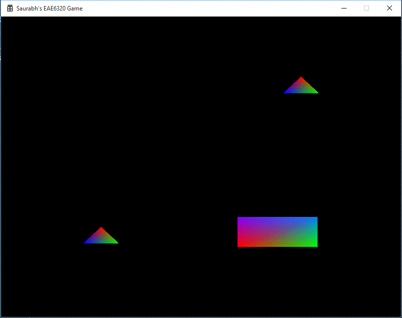
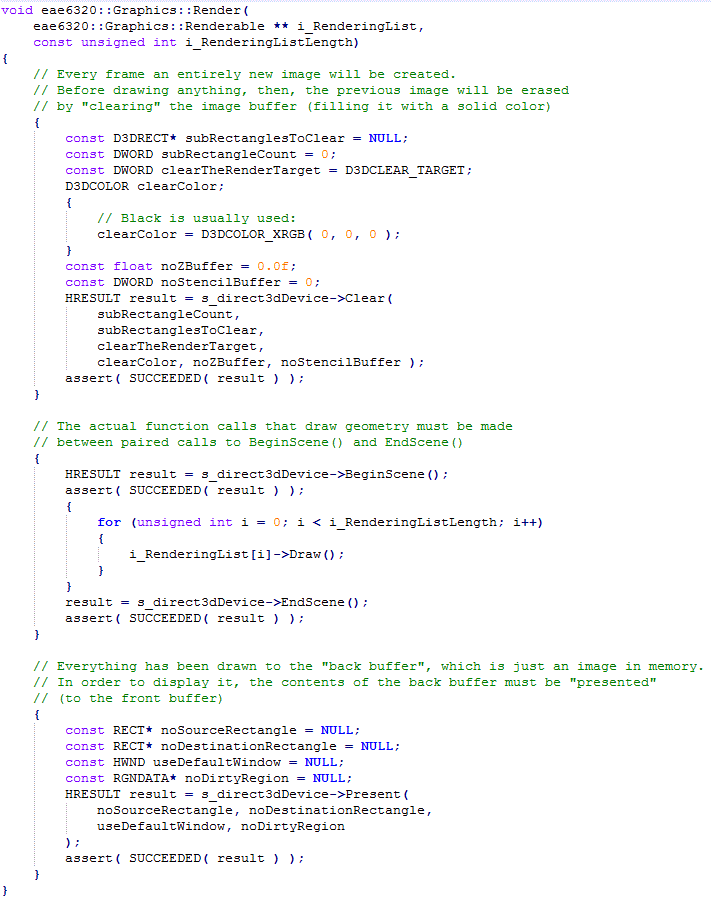
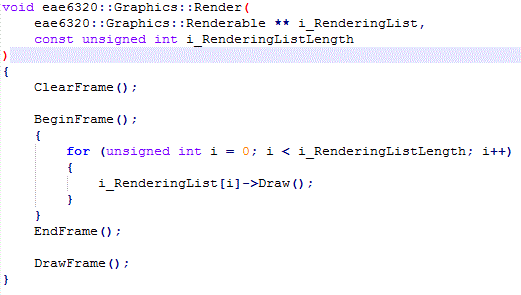
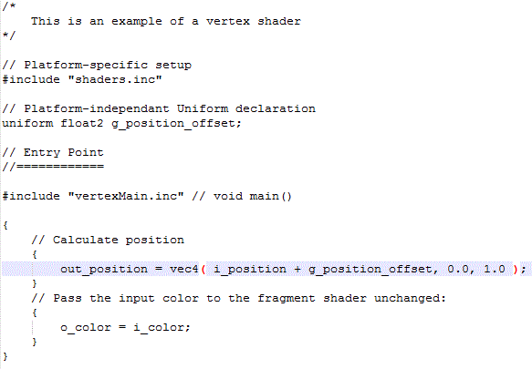
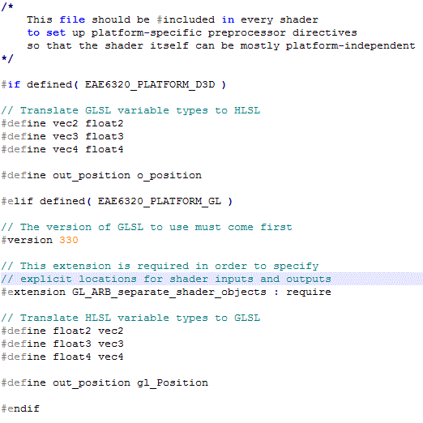
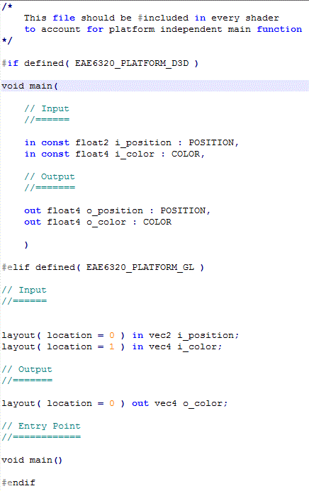
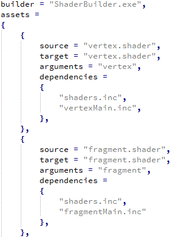
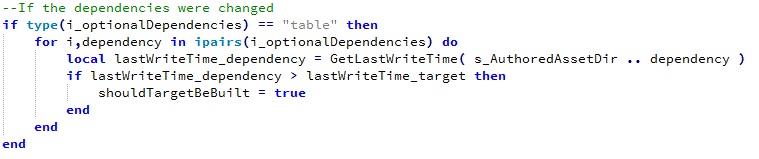
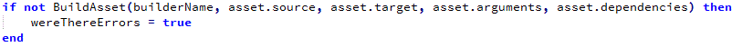

Platform Independent-ness
Assignment 09
This was the second of the two assignment due this week. This was the final ramp up to the big reveal of the assignment next week (pssst ... 3D!!). We had to finally make the render function in Graphics.cpp platform independent. In my case, it was more or less already done, apart from the few lines of code related to clearing the buffer and pushing the back buffer. We also had convert the shader code to be (mostly) platform independent. This is done by using including .inc files. The output is the same as the previous assignments (for the last time)!

Platform Independent Render()
For the most part, my Render function was platform independent. To make it completely make it independent, I created four new functions with platform independent interface:
ClearFrame()- to reset the color to black at the start of every frame.BeginFrame()- to account for theBeginScene()function for Direct3D. Empty for OpenGL.EndFrame()- to account for theEndScene()function for Direct3D. Empty for OpenGL.DrawFrame()- to draw the back buffer onto the screen.
The platform specific details are hidden by having platform dependent definitions for the above functions in Graphics.d3d.cpp and Graphics.gl.cpp. To compare the difference, the Direct3D version and the platform independent version is shown below.
Old Direct3D Render function

New Platform Independent Render function

Platform Independent Shaders
To achieve this, we use the same technique which we used for the render function. We moved all the platform specific changes to separate files. Things such as data types and different syntax for setting the position are handled by this include file. We could use either float or vec as data types in the platform independent shader. I decided to use vec as it clearly shows that we are using a vector, and also because so far, we have written all the asset files with OpenGL as the default language (atleast for the winding order).
I also found a way to make the main() function platform independent. In John-Paul’s code, he had cleverly got around the differences of variable declaration in HLSL and GLSL. In HLSL, we have to define the variables inside the parenthesis of the main function, while for GLSL, we have to define variables before main is defined. The workaround for this was to move this code to its own include file. Hence it is missing a void main() statement in the original file, the #include "vertexMain.inc" makes sure that the statement is not missed in the compiled shader. This is shown in the images below.
vertex.shader

shaders.inc

vertexMain.inc

Edit:
I guess I forgot to add the part where I explain about the dependency in the shaders. I check if there is a dependency table and if the dependency files are modified after the asset file is built, then the asset building is done again. i have attached the updated sections of AssetsToBuild.lua and BuildAssets.lua
AssetsToBuild.lua

BuildAssets.lua
 
Controls
Use the (Arrow keys) to move the rectangle mesh and press ESC to exit the game.
Time Estimate
Reading: 1 hour
Coding: 2.5 hours
Debugging: 1 hour
Writeup: 1 hour
Download Links
Download Direct3D
Download OpenGL